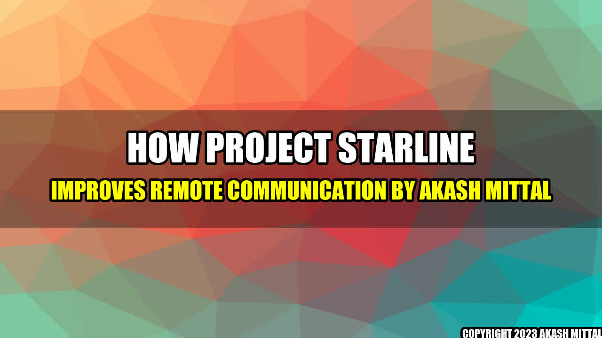

How Project Starline improves remote communication
Imagine you are a soldier deployed overseas and you want to see your family back home. Or you are a doctor who needs to consult with a specialist in another city. Or you are a student who wants to attend a lecture at a university in a different country. In all these situations, remote communication is the only option. But traditional video calls often lack the depth and presence of in-person conversations.
That's where Google comes in. The company has developed a new technology called Project Starline that aims to make remote communication feel more natural and immersive. The system uses a combination of custom-built hardware and software to create a 3D image of the person you are talking to and displays it on a high-resolution display.
Examples of Project Starline in action
Project Starline is still in the prototype stage and is currently being tested with select partners. However, Google has shared some examples of how the technology could be used:
- A soldier stationed overseas could use Project Starline to have a "face-to-face" conversation with their family back home, with both parties feeling as though they are in the same room.
- A doctor in a rural area could use Project Starline to consult with a specialist in a big city, with both parties seeing each other in 3D and being able to examine medical images together.
- A student in one country could use Project Starline to attend a lecture at a university in another country, with the lecturer appearing as a 3D image on a stage in the student's classroom.
Conclusion
Here are three key takeaways about how Project Starline improves remote communication:
- It creates a more natural and immersive experience by using 3D imaging and high-resolution displays.
- It enhances the depth and presence of remote conversations by making it feel like the participants are in the same room.
- It has the potential to improve various industries, from healthcare to education to military.
Social
Share on Twitter Share on LinkedIn